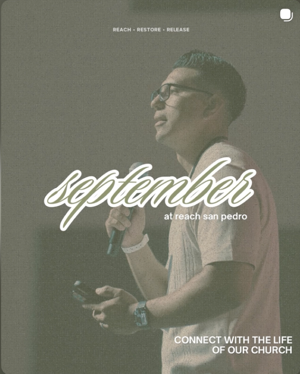

Plan Your Visit
Learn what to expect when you visit Reach San Pedro, including service information, location details, and helpful information for your first visit.

FIND YOUR PLACE
Church is more than attending a service. It is a community where people can build relationships, grow in their faith, discover their gifts, and serve others.
Reach San Pedro provides opportunities for people at different stages of their faith journey to connect with others and become part of the church community.
Whether you are visiting for the first time, looking for a ministry, interested in serving, or looking for ways to reach the community, there is an opportunity to get connected.
EXPLORE YOUR NEXT STEP
Learn what to expect when you visit Reach San Pedro, including service information, location details, and helpful information for your first visit.
Discover opportunities for children, youth, prayer, outreach, and other areas of ministry within the Reach San Pedro community.
Serving is an opportunity to use your gifts and abilities to support the church and help create a welcoming environment for others.
Prayer is an important part of our church community. Connect with us and share a prayer request with our church family.
Learn how Reach San Pedro engages with the surrounding community and provides opportunities to serve and support others.
Keep up with church events, announcements, ministry opportunities, and other ways to stay involved with the Reach San Pedro community.